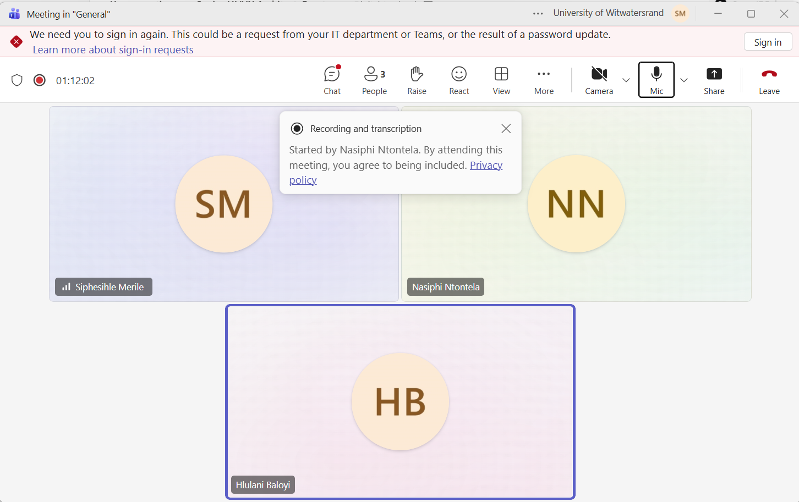
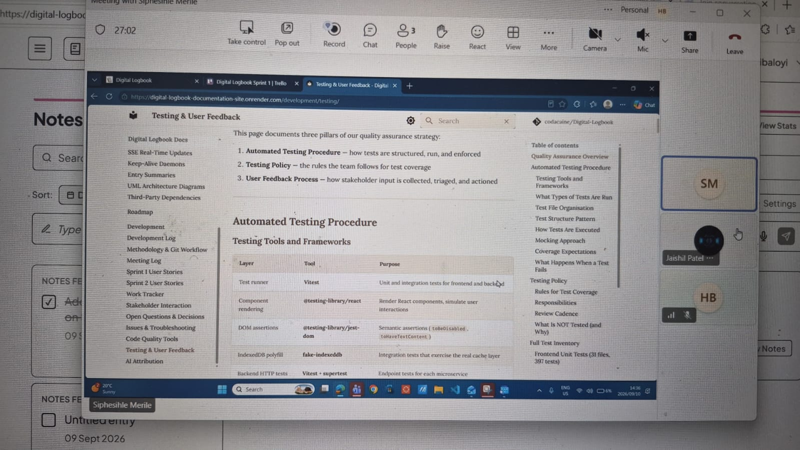
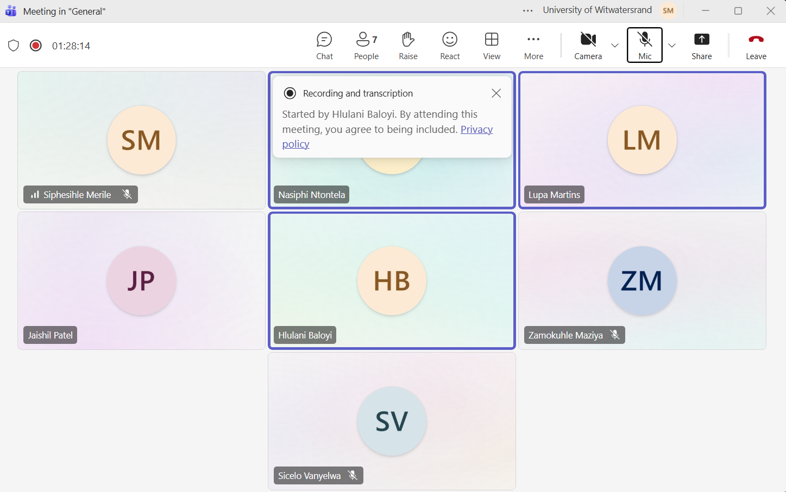

Meeting Log¶
Sprint 2¶
Meeting 9 — 2 September 2026¶
Venue: Online (Microsoft Teams call) Attendees: Siphesihle Merile, Nasiphi Ntontela, Hlulani Baloyi
Context: The team met after Sprint 1 to plan the Sprint 2 work and address issues identified in the previous sprint.
What we did:
- Planned the work to be completed during Sprint 2.
- Diagnosed what was broken from Sprint 1.
- Discussed and planned fixes for the Sprint 1 issues.
Decisions made:
- Sprint 2 work will be planned around the agreed priorities.
- The identified Sprint 1 issues will be addressed as part of the planned fixes.
Open questions / disagreements:
- Specific implementation details for the Sprint 1 fixes will be resolved as the work is assigned and completed.
Next step decided:
- Break the Sprint 2 plan into assigned tasks.
- Implement and verify fixes for the Sprint 1 issues.
Proof of meeting:

Daily Standup — 7 September 2026¶
Venue: Online (Microsoft Teams) Attendees: Hlulani, Siphesihle, Lupa, Sicelo, Zamo, Nasiphi (full team)
Context: First daily standup of Sprint 2. The team synced on progress since the Sprint 2 planning meeting and made sure everyone was unblocked before the first client check-in of the sprint.
What we did:
- Each team member provided a brief update on their current progress:
- Hlulani: Refining the entry-card UI — tightening spacing, aligning the status and priority tags, and making the entry button more prominent as requested by the client in the Sprint 1 review.
- Siphesihle: Diagnosing a backend blocker where the dashboard service
was failing to bind to its port on startup; traced it to a port conflict
with the project service and documented the fix (explicit
PORTper service). - Lupa: Continuing work on the archive flow and verifying archived entries no longer appear in the main feed.
- Sicelo: Syncing the Stats module with the entry data model so the "Time Tracked" figures stay accurate as entries are edited.
- Zamo: Extending the activity log to cover entry updates and status changes, not just creation events.
- Nasiphi: Regression-testing the auth flow after the Sprint 1 fixes and confirming the account-deletion grace period behaves as specified.
- Discussed blockers: the port-conflict issue was the main one — it was resolved during the call and the fix was committed.
- Coordinated on integration points for the Timer/Stats feature so the elapsed time shown on an entry card matches the totals reported by the Stats module.
Decisions made:
- Every backend service must document its default port in the service README to prevent future port conflicts.
- The Timer/Stats work will be treated as one integrated feature so the live timer, the dashboard banner, and the statistics panel all read from the same duration calculation.
Next step decided:
- Siphesihle to commit the port-conflict fix and update the service READMEs.
- Hlulani to share the updated entry-card styling for review before the next standup.
Daily Standup — 9 September 2026¶
Venue: Online (Microsoft Teams) Attendees: Hlulani, Siphesihle, Lupa, Sicelo, Zamo, Nasiphi (full team)
Context: Mid-week standup ahead of the client demonstration on 10 September. The team reviewed what would be demo-ready, agreed what to hold back, and closed out remaining blockers.
What we did:
- Each team member provided a brief update on their current progress:
- Hlulani: Walked through the final UI refinements — dashboard layout, entry-card sizing (fixing the card taking up half the screen from Sprint 1 feedback), and the toggleable dashboard view.
- Siphesihle: Reported the backend blockers cleared — services now start reliably on their assigned ports — and demonstrated the Timer feature counting elapsed time on an in-progress entry with the Stats module totals updating in sync.
- Lupa: Confirmed the archive and pin features are stable and ready for the demo.
- Sicelo: Showed the project-level statistics cards (time tracked, completion counts) rendering correctly with live data.
- Zamo: Verified the activity log captures the full history of an entry (created, updated, started, completed).
- Nasiphi: Finalised auth regression checks and prepared a clean test account for the client to use during user testing.
- Synced on the demo plan for the client meeting: feature order, who presents which part, and the user-testing script (tasks for participants to attempt).
- Agreed to freeze non-essential merges after this standup so the demo build stays stable.
Decisions made:
- The client demo will follow the user journey end-to-end: sign in, create a project, capture an entry with the timer, view the dashboard, and check the stats — with the user-testing session run straight after.
- Code freeze on non-essential merges until after the 10 September client meeting.
Next step decided:
- Team to deploy the latest stable build and smoke-test it before the client meeting.
- Nasiphi to send the meeting invitation and user-testing instructions.
Client Meeting — 10 September 2026¶
Venue: Discussion Room 3, Wartenweiler Library (in person) Attendees: Hlulani, Siphesihle, Lupa, Sicelo, Zamo, Nasiphi (full team) + client/tutor
Context: Sprint 2 progress demonstration and user testing session with the client.
What we did:
- Demonstrated our current progress on the Digital Logbook application to the client. The demo followed the full user journey agreed in the 9 September standup: signing in, creating a project, capturing an entry with the live timer running, viewing the dashboard (both project-centric and entry-centric views), and reviewing the statistics panel.
- The client responded positively and liked what was shown. Specific praise went to the toggleable dashboard, the more prominent entry button, and the entry-card sizing fixes carried over from the Sprint 1 feedback.
- Conducted a user testing session where participants tested the app and provided comments and feedback. Participants completed a scripted set of tasks (create a project, log an entry, start and stop the timer, archive a completed item) and narrated any points of confusion.
- Captured the user-testing comments for review — most feedback concerned small UI wording issues and a request for clearer timer labels, which the team agreed were quick wins for the next cycle.
Decisions made:
- Client feedback and user testing comments will be reviewed and incorporated into the next development cycle.
- The requested timer-label clarification will be handled together with the ongoing Timer/Stats work rather than as a separate item.
Next step decided:
- Transcribe the user-testing comments into the project documentation and convert them into backlog items for Sprint 2.
- Schedule the next client check-in after the Timer/Stats feature is finalised.
Proof of meeting:

Client Meeting — 12 September 2026¶
Venue: Online (Microsoft Teams) Attendees: Hlulani, Siphesihle, Lupa, Sicelo, Zamo, Nasiphi (full team)
Context: Sprint 2 sync two days after the client meeting. The team reviewed the feedback collected during the 10 September demonstration and user-testing session, and replanned the remaining Sprint 2 work around it.
What we did:
- Reviewed the client feedback and user-testing comments from the 10 September client meeting and grouped them into quick wins versus items that need design discussion.
- Each team member provided a brief update on their current progress:
- Hlulani: Finalising the timer label and entry-card copy changes requested during user testing; confirmed the UI now clearly distinguishes the deadline countdown from the work-session timer.
- Siphesihle: Demonstrated the updated Timer behaviour — pause/resume with the Stats module totals staying in sync — and walked through the remaining edge cases (entries started before the fix).
- Lupa: Incorporating the archive-flow comments from user testing and tightening the confirmation prompts.
- Sicelo: Verified the statistics panel against the user-testing scenarios so the figures participants questioned are now explained in-app.
- Zamo: Linking activity-log entries to the user actions observed during the testing session for traceability.
- Nasiphi: Scheduling the next client check-in and preparing the feedback summary for the stakeholder log.
- Re-planned the Sprint 2 backlog: quick-win feedback items were pulled into the current sprint, while larger items were logged for the next sprint planning session.
- Confirmed the merge-request pipeline is green so the Timer/Stats changes can be merged into main safely.
Decisions made:
- All quick-win feedback from the user-testing session will be completed within the current sprint; larger items go to the Sprint 3 backlog.
- The next client check-in will focus on a demonstration of the corrected timer and stats behaviour.
Next step decided:
- Finalise and merge the Timer/Stats changes via merge request.
- Publish the updated documentation, including the expanded meeting logs and stakeholder-interaction evidence.
Proof of meeting:
